ニュースリリース
株式会社Joshinが賛助会員に加入
一般社団法人大阪府eスポーツ連合は、株式会社Joshinが当連合の賛助会員として加入したことをお知らせします。 社会貢献・業界貢献・大阪のeスポーツシーンの振興を主題に、連携を一段と深めてまいります。
記事を読むJapan esports Union Osaka
大阪府eスポーツ連合は、ゲーマーファースト、ゲームコミュニティファーストを軸に、 講演、イベント協力、マッチング、学生支援を通じて大阪のeスポーツ振興に取り組みます。
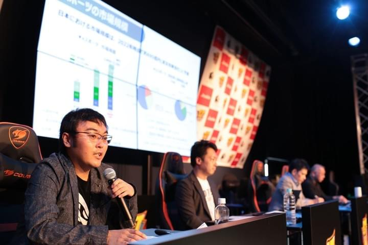
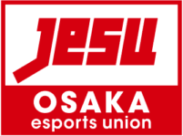
Osaka esports networkWhat's New
会員情報、勉強会、イベント掲載、活動報告を掲載します。
ニュースリリース
一般社団法人大阪府eスポーツ連合は、株式会社Joshinが当連合の賛助会員として加入したことをお知らせします。 社会貢献・業界貢献・大阪のeスポーツシーンの振興を主題に、連携を一段と深めてまいります。
記事を読む大阪府内で開催されるeスポーツ関連イベントの掲載申込を、ログイン不要のフォームで受け付けます。
会員の交流機会、業界情報の共有、学生支援につながる情報を順次掲載します。
Purpose
すべてのゲームを愛する人と関係者の力になり、楽しむ人・支える人の双方を大切にします。
大阪府内の自治体、教育機関、企業、イベント事業者をつなぎ、実行しやすい形に整えます。
学生や若手がeスポーツの現場を学び、相談し、挑戦できる機会を広げます。
Activities
現行サイトの内容を整理し、相談者が「何を頼めるのか」をすぐ判断できる形に再構成しています。
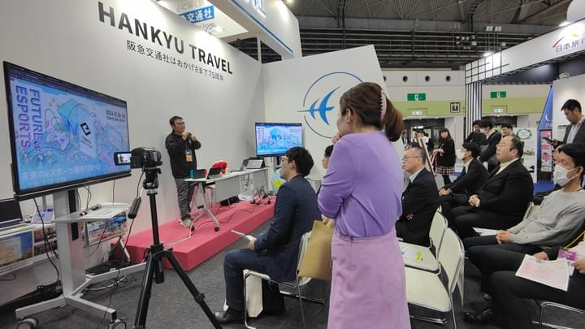
企業・学校・自治体向け
社内eスポーツ勉強会、学校での業界セミナー、PRイベント、起業に関する講演まで、 目的に合わせて企画・登壇します。
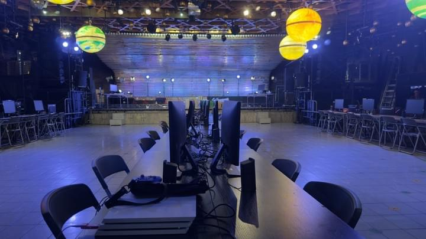
全体向け
体験会や大会に必要な機材相談、ゲームIP許諾の確認、イベント会社の紹介など、 現場づくりを支援します。
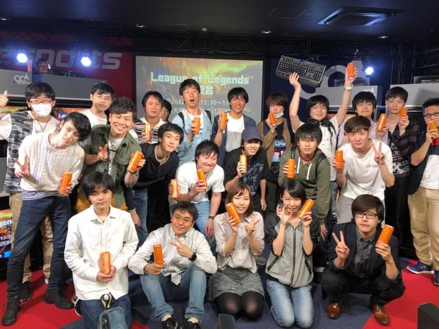
企業・学校向け
eスポーツ向けサービスや製品の相談、ビジネスマッチング、学生と企業の就職活動支援を行います。
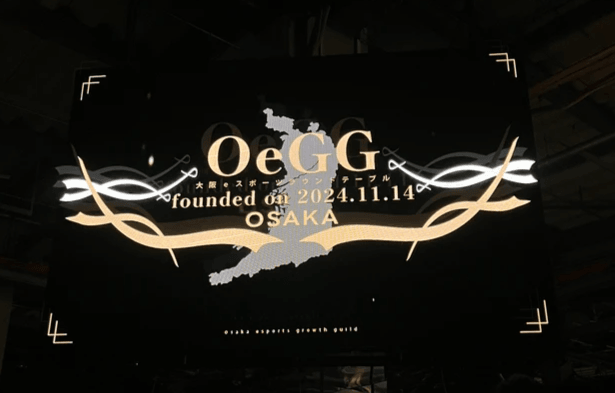
自治体向け
大阪府が設立した大阪eスポーツラウンドテーブルへ参画し、 大阪府のeスポーツ産業の発展と振興に協力しています。
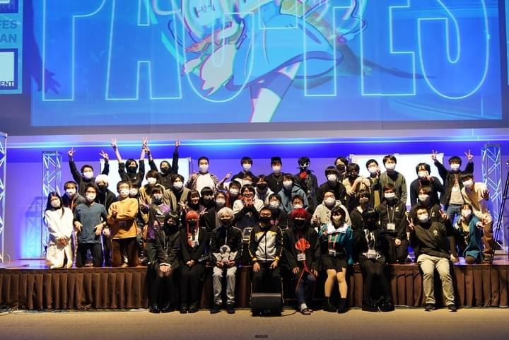
自治体・主催者向け
国スポ、ねんりんピック、ゲームIP主催イベントなど、国内外のeスポーツ関連イベントを大阪府へ誘致します。
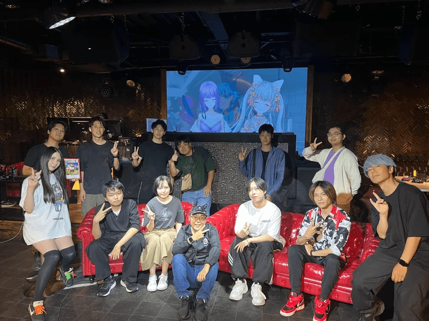
会員・学生向け
会報、勉強会、交流会を通じて、会員と学生の学びを支援します。 JeSU大阪eスポーツ塾は現在準備中です。
Track Record
現時点で公開できる実績を、相談者が読みやすい形に整理しています。
社内勉強会、学校での業界研究、eスポーツ製品のPRイベントなど、 対象者に合わせた講演・セミナーを実施してきました。
コミュニティから企業案件まで、体験会や大会の実施に必要な機材貸出、 企画相談、関係者紹介を支援しています。
大阪府が設立したOeGGに参画し、地域のeスポーツ産業発展と振興に協力しています。
会報、勉強会、交流会を通じて、次世代が相談しやすい環境を整えています。 JeSU大阪eスポーツ塾は準備中です。
Members
現行サイトの役職・コメントをもとに、見やすいカード形式へ整理しました。
代表理事
大阪から日本を元気に！
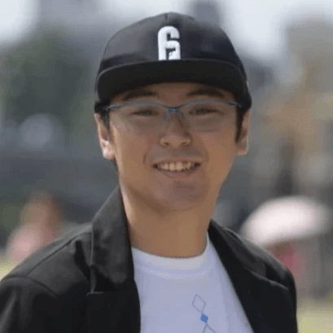
理事
大阪からゲームの楽しさとeスポーツの熱を世界へ発信します！
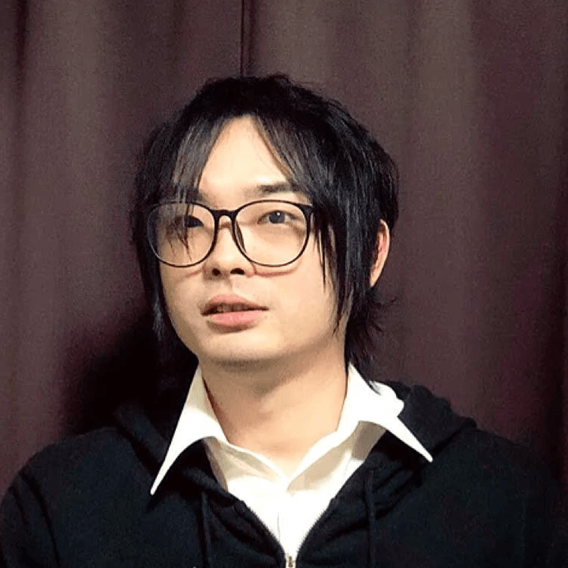
理事
積み上げられたゲームコミュニティ文化を尊重し、eスポーツとの調和を目指す。
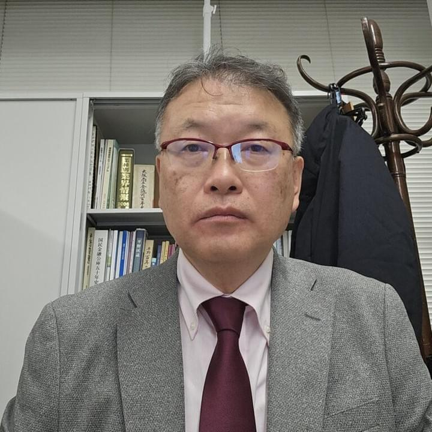
監事
eスポーツのポテンシャルを信じています。
About
現行サイトとJeSU公式地方支部ページに掲載されている基本情報を、確認しやすい形で整理しています。
Calendar
会員向け予定、大阪府内のイベント掲載、学生支援の相談受付をまとめます。 正式な日程が決まり次第、ここに追加します。
会報と合わせて、会員向けの学びと交流の場を掲載予定です。
大阪府内で開催するeスポーツ関連イベントの掲載希望を、外部主催者向けフォームで受け付けます。
専門分野を学ぶ学生・生徒向けの相談・学習支援は準備中です。
Contact
eスポーツに関わるご相談、後援依頼、講演依頼、タレントやチーム、企業の紹介などを受け付けます。 内容に合わせて、下記の窓口からご連絡ください。
大阪府内で開催するeスポーツ関連イベントの掲載希望は、専用フォームから受け付けます。
講演依頼、後援依頼、イベント協力、会員に関する相談は、公式Xまたは会員資料をご確認ください。